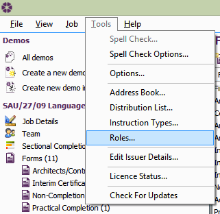
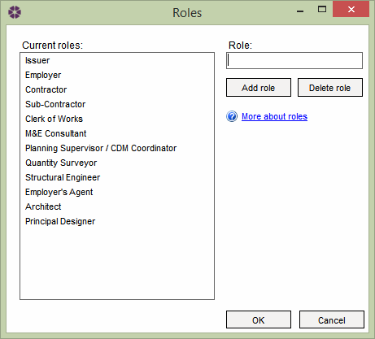

Roles |
Roles will be available to assign to companies using the Address Book.
They will also be available in the Job Team tab and consequently can appear
in the Form Distribution List
and associated Transmittal Sheet.
To access the Roles, go to Tools > Roles.

NBS Contract Administrator will have pre-set Roles that are protected from being deleted. To add a new Role to the current Roles list, enter the Role in the Role field and select Add role. To remove a Role from the list, select the Role from the list and click Delete role.

Please Note: users aren't able to duplicate existing Roles - a window will pop up to let them that the Role already exist. User can't rename existing Roles either.
See also:
Using Custom Roles
Address Book
Job Teams tab
Form Distribution List
Transmittal Sheet